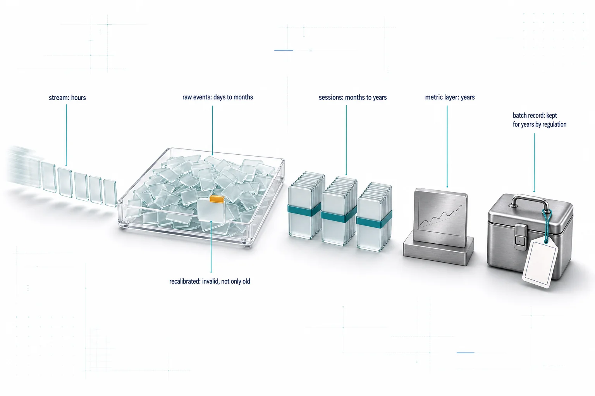

How Much Telemetry Is Enough
By Alexander Chernov. First published on LinkedIn, 2026-10-09. Read the original.
Part 2 of three on machine and user telemetry. Part 1 was the pipeline. This part is how much of the data to keep, and Part 3 is what to train on it.
A pipeline that keeps everything it can capture ends up mostly producing data about itself. What to keep comes down to one question: when is another observation new information? Five rules answer it for machines and people alike.
Collect for a decision. Report on change, not on the clock. Set fidelity by data class. Let data age from detail to summary. Treat data as obsolete when it stops being valid, not only when it gets old, and have agents check validity when they retrieve it rather than relying on a cleanup job.
The fifth rule carries the most weight. Storage age says when data was collected. Validity says whether it can still support a decision, and the two are not the same thing. How dashboards and agents read the data follows from those five rules.
Part 1 described one pipeline for machine and user telemetry: an event envelope checked at the edge, sessions defined once in the stream, a hot store for days and a lake for the history, metrics written once, and governance that follows the data. The user half I built at Citigroup carried up to about a terabyte a day. At that rate, moving the data is the easier problem. Deciding what is worth moving is the harder one.

Collect for a decision
Every event in the tracking plan names four things: the metric it feeds, who owns that metric, the decision it informs, and how long it is kept. An event that names no decision is not collected, or is only sampled. On a production line the decision might be whether a tool needs maintenance before the next lot. On a software product it might be whether a release is ready to go to more users.
How much is enough can be calculated. For a proportion, such as first-pass yield on one recipe or the share of users who complete a task, about 9,600 observations per segment give a margin of one percentage point either way at 95% confidence, and about 2,400 give two points. That is the standard sample-size formula at its worst case, a proportion of one half.
The observations have to be independent, so the count is of sessions, users or lots, not of raw events. Events from one machine or one user move together, and 9,600 of them from a handful of sources are worth far fewer.
For a 99th-percentile cycle time or command latency, about 10,000 observations per segment and window leave about 100 in the tail. That is a working heuristic for a p99, not a guarantee of its accuracy. Beyond those sample sizes, each additional observation adds less precision. Whether more data is worth collecting then depends on the decision, the population and the cost of a wrong answer, and rare events, drift and finer segments are the usual reasons to keep going.
Sample sizes apply to estimates. An alarm, an emergency stop or a crash is not an estimate. Each one can matter on its own, and those events are kept whole.
Report on change, not on the clock
A sensor that reports every second reports the same value most of the time. Industrial protocols already offer the alternative. Sparkplug devices report by exception, publishing a metric when it changes rather than on a schedule, and an OPC UA subscription can take a deadband, so a value is sent only when it moves by more than a set amount. The sensor still samples all the time; only what it sends changes.
Reporting on change needs a way to tell silence from failure. Sparkplug registers a death certificate as the MQTT Will message, so a device that drops off announces itself, and elsewhere a slow heartbeat does the same job.
Cameras raise a related but distinct question. There the saving is in computation, not transmission: a cheap check of each frame decides whether an expensive model needs to run at all. I measured it on 236,130 frames of real drives from two cars. At the same rate of skipped model calls, a refresh triggered by scene content hid 2.01 percentage points fewer scene changes than a timer, so the rule that looked at the content saw more of what changed for the same budget. The decision layer now runs live on ROS 2 and the Vehicle Signal Specification.
The user side has the same choice. A client that counts commands during a session and sends the counts at the end, or on the next start if the session crashed, carries the usage pattern at a small fraction of the cost of one event per click.
Fidelity by data class
Different data earns different fidelity. On the equipment side, alarms, faults, emergency stops and the events that make up a batch record are kept whole and never sampled, because they are rare and each one can matter.
Cycle summaries, such as cycle time and the range of a process value in each phase, are computed at the edge from values the gateway already sees. High-rate waveforms, such as vibration or motor current, are captured in a window around an event, before and after a fault, and stored in object storage with a pointer in the stream, as Part 1 described.
On the user side, license and subscription events, crashes, errors and AI interactions with user feedback are kept whole. Command usage is counted on the device for every session, and full command sequences are kept for a sample of sessions. The sample is drawn on a hash of the session id, so a sampled session is complete and its repeated sequences stay intact.
Performance is summarized on the device, and full traces are kept only for requests that were slow or failed, which is what tail sampling in OpenTelemetry does. Debug logging is off by default. It is switched on for one cohort during an investigation and switched off again automatically.
![Fidelity by data class, equipment beside users. Kept whole: alarms, faults, emergency stops and batch-record events; license and subscription events, crashes, errors and AI feedback. Summarized at the source: cycle summaries at the edge gateway; command counts and latency on the device. Captured on a trigger: high-rate waveforms in a window around a fault; full traces only for slow or failed requests. Sampled whole, users only: full command sequences for a hashed sample of sessions. Off by default, users only: debug logging for one cohort, switched off again automatically.](machine-telemetry-part-2/fig_fidelity.webp)
Both sides need an explicit telemetry budget: a share of CPU and network, and a cap on bytes per session or per machine per hour, with the collection code measured against it. A review loop keeps the plan current. An event that nobody has queried for a set number of days is sampled down and then removed, and the query logs show which events those are.
Data ages from detail to summary
The stream holds hours to days. It is a buffer for replay, not a store. The hot store keeps about a week.
In the lake, the grain and the data class set the age. User-level events might stay about 90 days under a purpose-specific retention policy, while derived and properly protected aggregates can stay longer where that is permitted. Equipment cycle records stay for years, because they are small and they are the history Part 1 replays.
Sessions stay for months to years. The daily aggregates in the metric layer stay for years, because they are small enough to keep. The online state an agent reads lives for minutes to days, with a time to live. These figures are examples. Each data class sets its own retention in its data contract.
Each layer has its own mechanism. Topic retention bounds the stream. In the lake, Apache Iceberg expires old snapshots and removes the files they no longer reference, which is the step that actually deletes data. A time-series database downsamples and drops by retention policy, and OpenSearch Index State Management moves indexes from hot to warm to deleted.
What ages out of the lake can no longer be replayed. When a definition changes, as with the micro-stop in Part 1, it reaches back only as far as the raw data that is left. The raw retention of a data class is therefore also the window in which its old data can be recomputed, and a class whose definitions are still settling earns a longer one.
Privacy law limits how long personal data may be kept, and a regulated plant also has a floor. Under the US current good manufacturing practice rules for finished drugs, the production, control and distribution records associated with a batch are kept for at least one year after the batch’s expiration date, and they must stay attributable and intact for that whole time.
Regulated decision records and monitoring telemetry are different things. The quality system decides which data a release decision rested on, and that data is kept with the record. A high-rate stream that only served monitoring, and that the quality system has not made part of the record, can still age to summaries.
Obsolete means invalid, not only old
A sensor is recalibrated, a recipe changes, a part is replaced, a machine is decommissioned. Data from before the change describes a machine that no longer exists in that form. On the user side, a product version is retired, a schema is deprecated, a metric is redefined, or a user withdraws consent or asks to be erased. Age alone does not capture any of these. A record can be recent and invalid, old and still historically valid, statistically useful and not authorized for this use, or correct for one machine configuration and misleading for another.
So each record carries a validity window and a schema version beside its timestamp. The envelope from Part 1 already carries the recipe, firmware and software versions that most of these changes key on.
Erasure in the lake is a row-level delete in Iceberg, and a deleted row stops being visible before it stops being stored. Once the delete commits, queries against the current snapshot no longer see the row. A query that started earlier finishes on the snapshot it began with, older snapshots still hold the row for time-travel reads until they expire, and caches and downstream copies hold it until they are refreshed or purged. The row leaves storage once the files that held it have been rewritten, by the delete itself or by a later compaction, and the snapshots that still point at the old files have expired.
An agent should check validity and freshness when it retrieves data, not rely on a cleanup job. Between two cleanup runs, an agent can act on data that has already been withdrawn. At retrieval it checks the dataset revision it is reading, the schema version, the validity interval of each record, and the current policy and consent, and it leaves an auditable record of the decision to use the data.
This is the question behind my Agentic Datasets work: what a dataset must carry before an agent may use it. One of its conformance assertions requires every result to record which dataset revision it used, so an answer built on data that was later withdrawn can be found afterward.
Dashboards read aggregates
At this scale, production dashboards should ordinarily read precomputed aggregates rather than scan raw events again and again. Investigative and low-volume dashboards are the legitimate exceptions. Its cost follows cardinality, not raw volume: machines × tags × recipes × sites on one side, users × commands × versions × regions on the other. Aggregates are computed first, at the grain each dashboard needs.
Operational views, such as line status or release health, read per-minute aggregates from the stream and are minutes old. Analytical views read the daily metric layer. Drill-down into raw data comes only from the days of sampled sessions in the hot store. Distinct counts use HyperLogLog and percentiles use sketches, because exact answers at this scale cost far more. An error of a percent or two rarely changes a decision unless the value sits near a decision threshold, and there the exact figure is worth computing.
Agents, both ways round
Part 1 gave agents tools over the governed metrics. Retention adds freshness to each tool. A maintenance agent reads daily features, an in-product assistant reads online state that is seconds old, and a support agent reads a few days of sampled sessions, with the user’s consent. Each tool runs fixed queries with cost limits and logs every answer as a decision record.
Agents can also run the loop. One proposes sampling down or retiring events that nobody queries, as a change to the tracking plan that a person approves. Another triages data-quality failures. That makes how much is enough a standing loop rather than a one-time decision.
Agents produce telemetry too. Their traces and tool calls need the same budget, sampling and retention, or the agent layer becomes the new part of the system that mostly monitors itself.
Each mechanism here is an established one: report by exception, sampling and confidence intervals, downsampling, retention policies and schema versions. What this part adds is using them together for decisions, because cutting cost and keeping decisions sound are related goals, not the same goal.
Part 3 covers what to train on this data. The validity windows set here decide much of it, because a training set must not teach a model relationships that a recalibration, a configuration change or a policy change has since invalidated. A model trained across a recalibration learns a sensor that no longer exists.
Sources. One Pipeline for Machines and People (Part 1): https://www.linkedin.com/pulse/one-pipeline-machines-people-alexander-chernov-dn9qc/ · Agentic Vision, the automotive result: https://vision.agenticdatasets.org · Agentic Datasets: https://agenticdatasets.org · Agentic Datasets conformance assertions: https://github.com/agentic-datasets/reference/blob/main/CONFORMANCE.md · Sample sizes for estimating proportions, NIST/SEMATECH e-Handbook of Statistical Methods: https://www.itl.nist.gov/div898/handbook/prc/section2/prc242.htm · Sparkplug specification: https://sparkplug.eclipse.org/specification/ · OPC UA Part 4, DataChangeFilter: https://reference.opcfoundation.org/Core/Part4/v105/docs/7.22.2 · OpenTelemetry sampling: https://opentelemetry.io/docs/concepts/sampling/ · Apache Kafka topic configuration, retention.ms: https://kafka.apache.org/41/generated/topic_config.html · Apache Iceberg maintenance: https://iceberg.apache.org/docs/latest/maintenance/ · Apache Iceberg row-level deletes: https://iceberg.apache.org/spec/#row-level-deletes · OpenSearch Index State Management: https://docs.opensearch.org/latest/im-plugin/ism/index/ · Apache DataSketches: https://datasketches.apache.org/ · 21 CFR 211.180, record retention: https://www.ecfr.gov/current/title-21/chapter-I/subchapter-C/part-211/subpart-J/section-211.180 · FDA, Data Integrity and Compliance With Drug CGMP: https://www.fda.gov/regulatory-information/search-fda-guidance-documents/data-integrity-and-compliance-drug-cgmp-questions-and-answers · European Commission, legal framework of EU data protection (GDPR): https://commission.europa.eu/law/law-topic/data-protection/legal-framework-eu-data-protection_en · Model Context Protocol specification: https://modelcontextprotocol.io/specification
#DataEngineering #IndustrialIoT #Telemetry #DataRetention #Manufacturing #Robotics #Observability #ApacheIceberg #AgenticAI
© 2026 Alexander Chernov. All rights reserved. First published on LinkedIn, which remains the canonical version; this page is a reprint by the author.